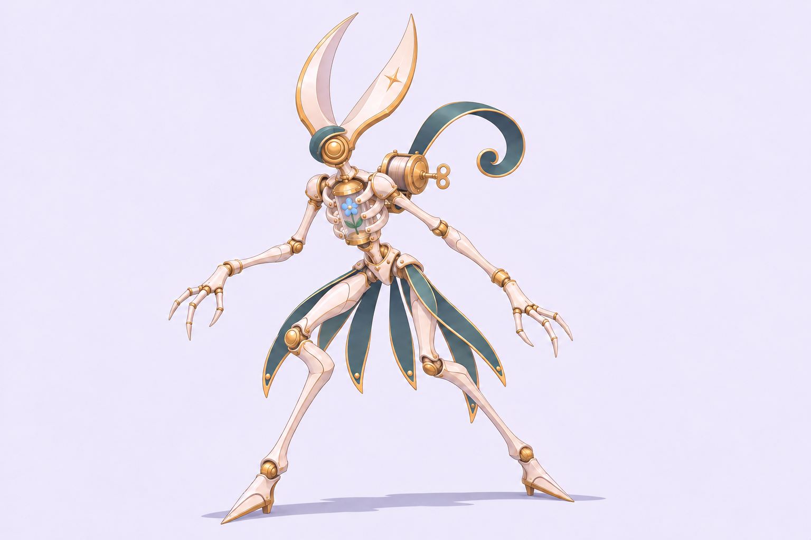
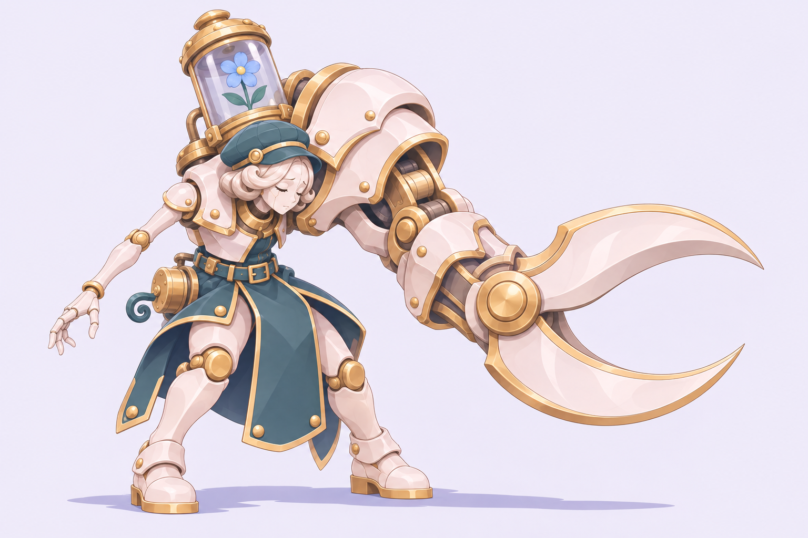
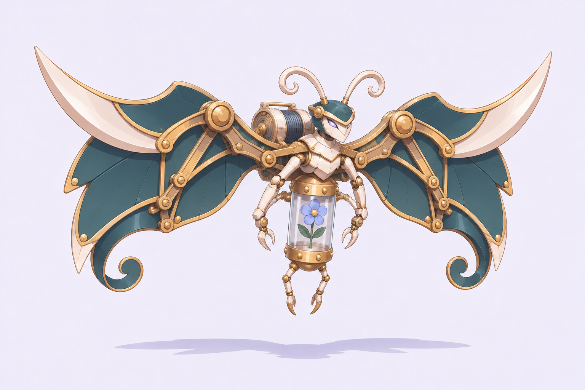
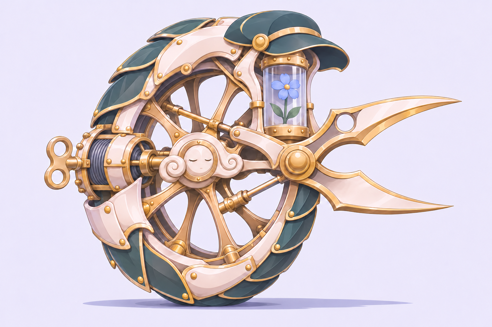
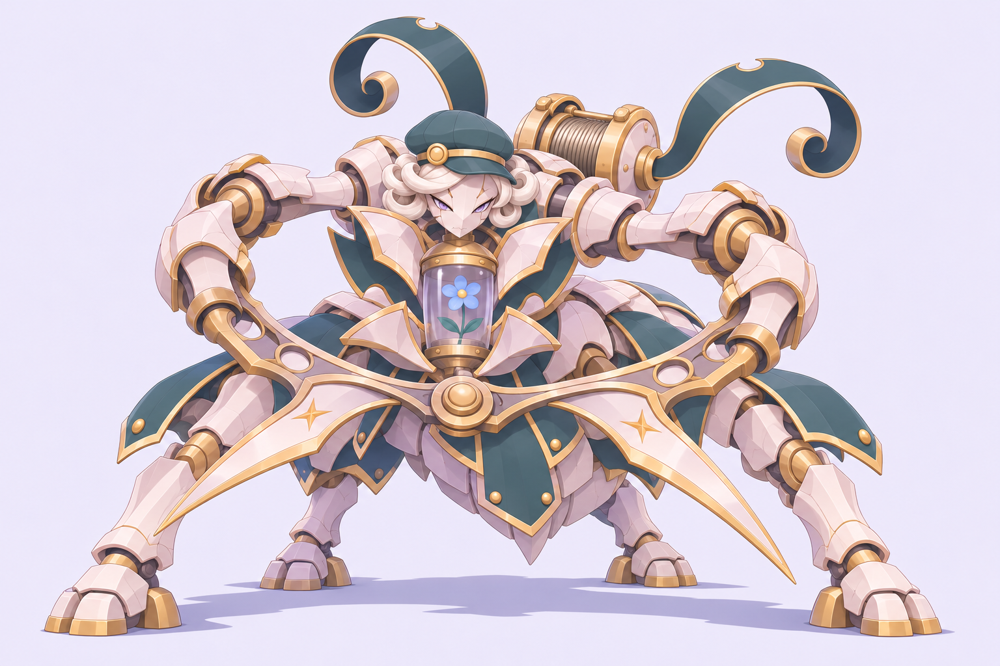

3번 날개·5번 칼날·노멀 인형을 결합한 수정안 보기
가위 머리 / 비대칭 거대팔 / 태엽나방 / 바퀴 온실 / 칼날 무희 · 이미지 클릭 확대

거대한 전지가위가 머리와 목의 주 형태가 된 추적자.

작은 인형 몸체에 커다란 일체형 절단팔이 접목된 형태.

꽃 유리함 복부와 두 개의 커다란 잎 칼날 날개.

하나의 태엽 바퀴와 일체형 가위턱으로 움직이는 기계.
두 팔 자체가 긴 칼날이 된 가느다란 정원 인형.
